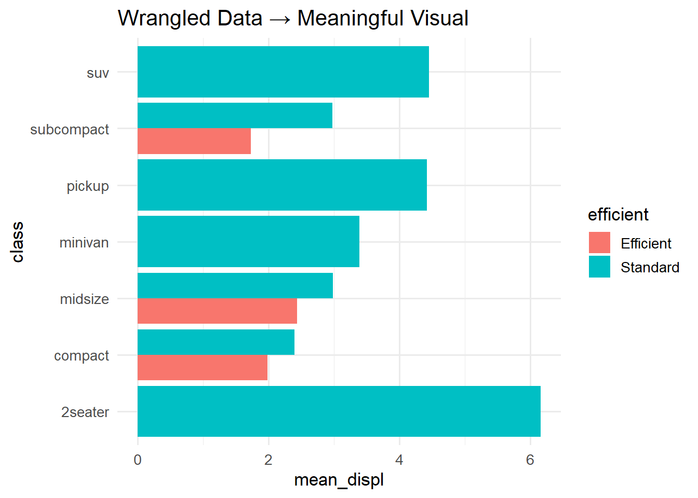

data_frame_example <- tibble(
Name = c("Alice", "Bob", "Charlie"),
Age = c(25, 30, 35)
)DATA in the Grammar of Graphics — Understanding Data Types and Wrangling with dplyr
1 The “DATA” Component in the Grammar of Graphics
In Wilkinson’s (2005) Grammar of Graphics, a visualisation consists of seven layers:
DATA, TRANS, SCALE, COORD, ELEMENT, GUIDE, and CONTEXT.
The DATA layer defines what you’re visualising — the variables, their structure, and their types.
Everything else in a plot (e.g. scales, aesthetics, geometry) depends on the data foundation.
Understanding how to manipulate and prepare data is crucial for meaningful visualisation. This tutorial walks through how to explore, wrangle, and understand datasets using the tidyverse, focusing on dplyr, tidyr, and ggplot2.
2 Tibbles and Data Frames
In R, a data frame is a two-dimensional table structure that stores data in columns (variables) and rows (observations). A tibble is an enhanced version of a data frame provided by the tibble package (part of the tidyverse).
2.0.1 Key differences:
- Printing: Tibbles print only the first 10 rows and the columns that fit your screen.
- Type stability: Tibbles never change variable names or types when subsetting.
- No partial matching: Tibbles require exact column names.
- Creation: Use
tibble()instead ofdata.frame().
Example:
3 Anatomy of a dplyr Pipeline
A dplyr pipeline is a sequence of data manipulation commands connected by the pipe operator %>%.
3.0.1 The pipe %>%
The pipe passes the output of one function as the input to the next function. It reads like natural language:
mpg %>%
filter(hwy > 30) %>%
select(manufacturer, model, hwy)This means: Take the mpg dataset → keep rows where hwy > 30 → keep only the selected columns.
This syntax improves readability by avoiding nested parentheses like:
select(filter(mpg, hwy > 30), manufacturer, model, hwy)4 Core Functions in dplyr
4.1 select()
Chooses specific columns by name.
mpg %>% select(manufacturer, model, hwy)# A tibble: 234 × 3
manufacturer model hwy
<chr> <chr> <int>
1 audi a4 29
2 audi a4 29
3 audi a4 31
4 audi a4 30
5 audi a4 26
6 audi a4 26
7 audi a4 27
8 audi a4 quattro 26
9 audi a4 quattro 25
10 audi a4 quattro 28
# ℹ 224 more rowsArguments: - manufacturer, model, hwy: column names to keep.
You can also use helper functions such as starts_with(), ends_with(), contains(), or select by position.
4.2 filter()
Keeps rows that satisfy logical conditions.
mpg %>% filter(hwy > 30, class == "compact")# A tibble: 8 × 11
manufacturer model displ year cyl trans drv cty hwy fl class
<chr> <chr> <dbl> <int> <int> <chr> <chr> <int> <int> <chr> <chr>
1 audi a4 2 2008 4 manu… f 20 31 p comp…
2 toyota camry sola… 2.4 2008 4 manu… f 21 31 r comp…
3 toyota camry sola… 2.4 2008 4 auto… f 22 31 r comp…
4 toyota corolla 1.8 1999 4 auto… f 24 33 r comp…
5 toyota corolla 1.8 1999 4 manu… f 26 35 r comp…
6 toyota corolla 1.8 2008 4 manu… f 28 37 r comp…
7 toyota corolla 1.8 2008 4 auto… f 26 35 r comp…
8 volkswagen jetta 1.9 1999 4 manu… f 33 44 d comp…Arguments: - Logical expressions using column names. - Multiple conditions separated by commas mean AND (both must be true).
4.3 arrange()
Sorts rows by one or more columns.
mpg %>% arrange(desc(hwy))# A tibble: 234 × 11
manufacturer model displ year cyl trans drv cty hwy fl class
<chr> <chr> <dbl> <int> <int> <chr> <chr> <int> <int> <chr> <chr>
1 volkswagen jetta 1.9 1999 4 manu… f 33 44 d comp…
2 volkswagen new beetle 1.9 1999 4 manu… f 35 44 d subc…
3 volkswagen new beetle 1.9 1999 4 auto… f 29 41 d subc…
4 toyota corolla 1.8 2008 4 manu… f 28 37 r comp…
5 honda civic 1.8 2008 4 auto… f 25 36 r subc…
6 honda civic 1.8 2008 4 auto… f 24 36 c subc…
7 toyota corolla 1.8 1999 4 manu… f 26 35 r comp…
8 toyota corolla 1.8 2008 4 auto… f 26 35 r comp…
9 honda civic 1.8 2008 4 manu… f 26 34 r subc…
10 honda civic 1.6 1999 4 manu… f 28 33 r subc…
# ℹ 224 more rowsArguments: - Columns to sort by. - desc() sorts in descending order.
4.4 mutate()
Adds new variables or transforms existing ones.
mpg %>% mutate(kmpl = hwy / 2.35)# A tibble: 234 × 12
manufacturer model displ year cyl trans drv cty hwy fl class
<chr> <chr> <dbl> <int> <int> <chr> <chr> <int> <int> <chr> <chr>
1 audi a4 1.8 1999 4 auto… f 18 29 p comp…
2 audi a4 1.8 1999 4 manu… f 21 29 p comp…
3 audi a4 2 2008 4 manu… f 20 31 p comp…
4 audi a4 2 2008 4 auto… f 21 30 p comp…
5 audi a4 2.8 1999 6 auto… f 16 26 p comp…
6 audi a4 2.8 1999 6 manu… f 18 26 p comp…
7 audi a4 3.1 2008 6 auto… f 18 27 p comp…
8 audi a4 quattro 1.8 1999 4 manu… 4 18 26 p comp…
9 audi a4 quattro 1.8 1999 4 auto… 4 16 25 p comp…
10 audi a4 quattro 2 2008 4 manu… 4 20 28 p comp…
# ℹ 224 more rows
# ℹ 1 more variable: kmpl <dbl>Arguments: - kmpl: the name of the new variable. - hwy / 2.35: expression defining how to compute it.
You can use vectorised functions (operate element-wise) inside mutate.
4.5 summarise() (or summarize())
Creates summary statistics for each group of data.
mpg %>% summarise(mean_hwy = mean(hwy))# A tibble: 1 × 1
mean_hwy
<dbl>
1 23.4Arguments: - New variable name (mean_hwy) - Summary expression (mean(hwy)).
4.6 group_by()
Groups rows based on one or more columns so that subsequent operations (like summarise) act within each group.
mpg %>%
group_by(class) %>%
summarise(mean_hwy = mean(hwy))# A tibble: 7 × 2
class mean_hwy
<chr> <dbl>
1 2seater 24.8
2 compact 28.3
3 midsize 27.3
4 minivan 22.4
5 pickup 16.9
6 subcompact 28.1
7 suv 18.1group_by() changes how dplyr verbs behave: they now operate within each group.
4.7 across() and everything()
4.7.1 across()
Allows you to apply a function to multiple columns within summarise() or mutate().
mpg %>% summarise(across(where(is.numeric), mean, na.rm = TRUE))Warning: There was 1 warning in `summarise()`.
ℹ In argument: `across(where(is.numeric), mean, na.rm = TRUE)`.
Caused by warning:
! The `...` argument of `across()` is deprecated as of dplyr 1.1.0.
Supply arguments directly to `.fns` through an anonymous function instead.
# Previously
across(a:b, mean, na.rm = TRUE)
# Now
across(a:b, \(x) mean(x, na.rm = TRUE))# A tibble: 1 × 5
displ year cyl cty hwy
<dbl> <dbl> <dbl> <dbl> <dbl>
1 3.47 2004. 5.89 16.9 23.4Arguments: - First argument: columns to apply the function to (e.g., where(is.numeric) selects all numeric columns). - Second: function to apply (mean).
4.7.2 everything()
A helper that refers to all columns.
mpg %>% summarise(across(everything(), class))# A tibble: 1 × 11
manufacturer model displ year cyl trans drv cty hwy fl class
<chr> <chr> <chr> <chr> <chr> <chr> <chr> <chr> <chr> <chr> <chr>
1 character character numeric inte… inte… char… char… inte… inte… char… char…This returns the class (data type) of every column.
5 Discovering Datasets in ggplot2 and tidyverse
You can explore built-in datasets to practice wrangling and plotting.
library(ggplot2)
data(package = "ggplot2")Load and preview one:
data(mpg)
glimpse(mpg)Rows: 234
Columns: 11
$ manufacturer <chr> "audi", "audi", "audi", "audi", "audi", "audi", "audi", "…
$ model <chr> "a4", "a4", "a4", "a4", "a4", "a4", "a4", "a4 quattro", "…
$ displ <dbl> 1.8, 1.8, 2.0, 2.0, 2.8, 2.8, 3.1, 1.8, 1.8, 2.0, 2.0, 2.…
$ year <int> 1999, 1999, 2008, 2008, 1999, 1999, 2008, 1999, 1999, 200…
$ cyl <int> 4, 4, 4, 4, 6, 6, 6, 4, 4, 4, 4, 6, 6, 6, 6, 6, 6, 8, 8, …
$ trans <chr> "auto(l5)", "manual(m5)", "manual(m6)", "auto(av)", "auto…
$ drv <chr> "f", "f", "f", "f", "f", "f", "f", "4", "4", "4", "4", "4…
$ cty <int> 18, 21, 20, 21, 16, 18, 18, 18, 16, 20, 19, 15, 17, 17, 1…
$ hwy <int> 29, 29, 31, 30, 26, 26, 27, 26, 25, 28, 27, 25, 25, 25, 2…
$ fl <chr> "p", "p", "p", "p", "p", "p", "p", "p", "p", "p", "p", "p…
$ class <chr> "compact", "compact", "compact", "compact", "compact", "c…View summary statistics:
summary(mpg) manufacturer model displ year
Length:234 Length:234 Min. :1.600 Min. :1999
Class :character Class :character 1st Qu.:2.400 1st Qu.:1999
Mode :character Mode :character Median :3.300 Median :2004
Mean :3.472 Mean :2004
3rd Qu.:4.600 3rd Qu.:2008
Max. :7.000 Max. :2008
cyl trans drv cty
Min. :4.000 Length:234 Length:234 Min. : 9.00
1st Qu.:4.000 Class :character Class :character 1st Qu.:14.00
Median :6.000 Mode :character Mode :character Median :17.00
Mean :5.889 Mean :16.86
3rd Qu.:8.000 3rd Qu.:19.00
Max. :8.000 Max. :35.00
hwy fl class
Min. :12.00 Length:234 Length:234
1st Qu.:18.00 Class :character Class :character
Median :24.00 Mode :character Mode :character
Mean :23.44
3rd Qu.:27.00
Max. :44.00 6 Data Types and ggplot Behaviour
| Data Type | Example | ggplot Behaviour | Typical Geoms |
|---|---|---|---|
| Numeric | hwy, displ |
Continuous scale | geom_point() |
| Factor | class |
Discrete scale | geom_bar() |
| Ordered | Low/Med/High |
Ordered discrete | geom_col() |
| Binary | TRUE/FALSE | Two discrete fills | geom_point() |
| Date | Date | Continuous time | geom_line() |
7 Example of Wrangling and Plotting
mpg %>%
mutate(efficient = ifelse(hwy > 30, "Efficient", "Standard")) %>%
group_by(efficient, class) %>%
summarise(mean_displ = mean(displ), .groups = "drop") %>%
ggplot(aes(class, mean_displ, fill = efficient)) +
geom_col(position = "dodge") +
coord_flip() +
labs(title = "Wrangled Data → Meaningful Visual")
7.0.1 Explanation of Components
mutate(): Creates a new variableefficient.ifelse(): Applies a conditional test (returns one of two outcomes per row).group_by(): Groups data by efficiency and class.summarise(): Calculates mean displacement per group..groups = "drop": Removes grouping after summarisation.ggplot(): Maps variables to visual aesthetics.geom_col(): Draws bars whose heights represent values.
8 Quick Reference: Dataset Discovery & Inspection
| Task | Function | Description |
|---|---|---|
| List datasets | data(package = "ggplot2") |
Lists all available datasets in the package |
| Load dataset | data("mpg") |
Loads the dataset into memory |
| View structure | glimpse(mpg) |
Compact view of columns and types |
| Summaries | summary(mpg) |
Basic descriptive stats per variable |
| Frequency table | count(mpg, class) |
Counts of each class |
| Skim overview | skimr::skim(mpg) |
Extended descriptive summary |
9 Summary
| Goal | Function(s) | Purpose |
|---|---|---|
| Subset columns | select() |
Keep or reorder variables |
| Filter observations | filter() |
Keep specific rows |
| Add or transform variables | mutate() |
Create new information |
| Aggregate | group_by(), summarise() |
Compute summaries per group |
| Apply functions | across(), everything() |
Transform multiple columns |
| Reshape | pivot_longer(), pivot_wider() |
Convert between wide and long formats |
| Combine | join(), bind_rows() |
Merge data sources |
| Inspect | glimpse(), skim() |
Understand dataset structure |